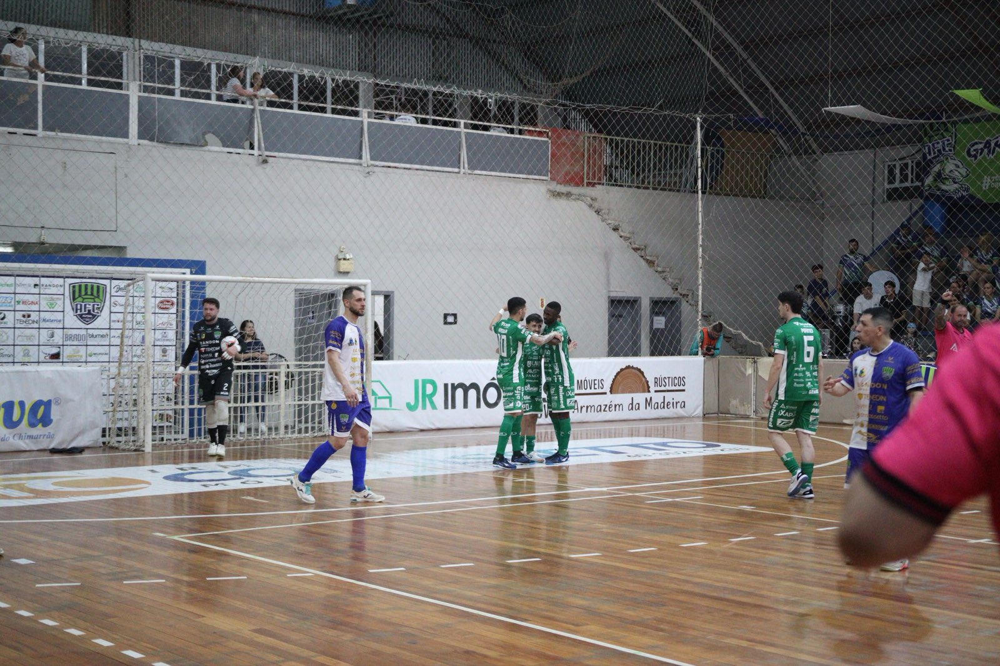
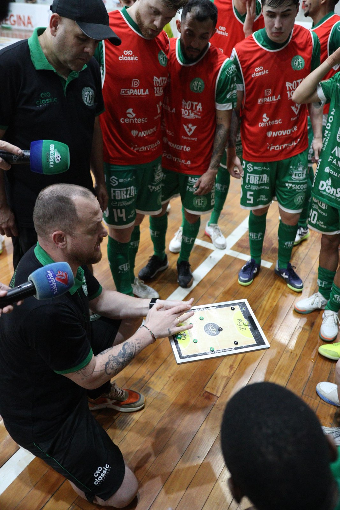
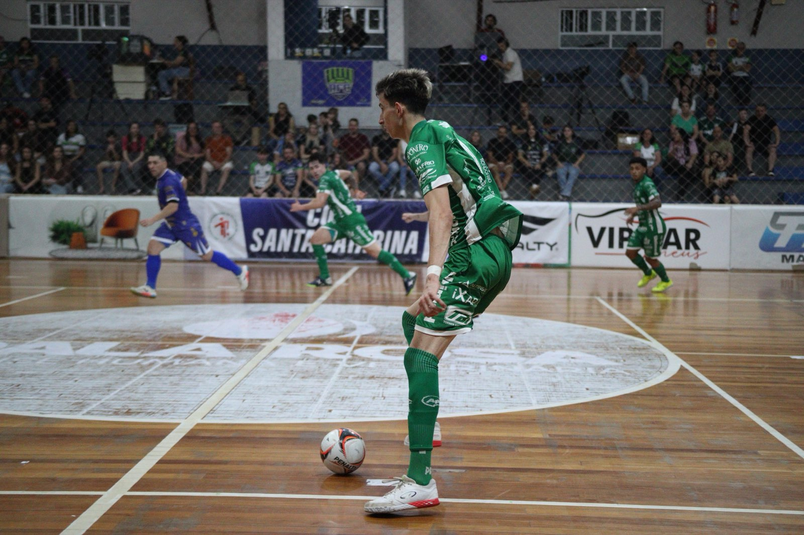

Mais uma vitória elástica da Prefeitura de Chapecó/Chapecoense/Unochapecó! Depois de aplicar 7 a 2 na ACF/Concórdia pela Série Ouro do futsal catarinense, o Verdão das Quadras fez 9 a 2 no Catanduvas na noite deste sábado (29), fora de casa, no Ginásio Municipal Yara Nicoletti, pela última rodada da primeira fase da Copa Santa Catarina.
Em Catanduvas, no Meio-oeste do Estado, a Chape Futsal levou um susto nos primeiros instantes de jogo. Aos 31 segundos, Leonardo balançou a rede e abriu o placar para os anfitriões, mas os visitantes reagiram e construíram boa vantagem no primeiro tempo. João Camilo empatou aos 5'08", Toninho virou aos 7'31" e Ximba aumentou a diferença aos 18'35".

O que já estava bom para o time do técnico Leo Schroeder ficou ainda melhor no início da segunda etapa. Aos 45 segundos, Maranhão marcou o quarto gol. A equipe verde-branca manteve o ritmo e chegou ao quinto aos 5'23", com Mano. O domínio da Chapecoense era total, e o sexto saiu aos 7'53" com João Camilo, o segundo dele na partida.

O Catanduvas passou a apostar no goleiro-linha e conseguiu descontar. Fabiano anotou o segundo dos mandantes aos 9'08", porém, aos 10'48, João Seco fez o sétimo tento do Verdão das Quadras. A goleada foi fechada com Kassula, que deixou a sua marca duas vezes, aos 14'38" e aos 15'31".

Com o triunfo, a Chapecoense finalizou a etapa de grupos com 13 pontos, decidirá as quartas de final em casa, e mantém o bom momento. O Verdão também lidera de maneira isolada a Série Ouro do Catarinense, posição assumida depois de golear o time de Concórdia na última quarta-feira (26), em Chapecó. Agora, a Chape Futsal foca no duelo diante do São José, no próximo sábado (5), às 10h, em Macapá (AP), pela sexta rodada do Brasileiro.
Crédito das fotos: @rogersilva_fotografia/@achapefutsal